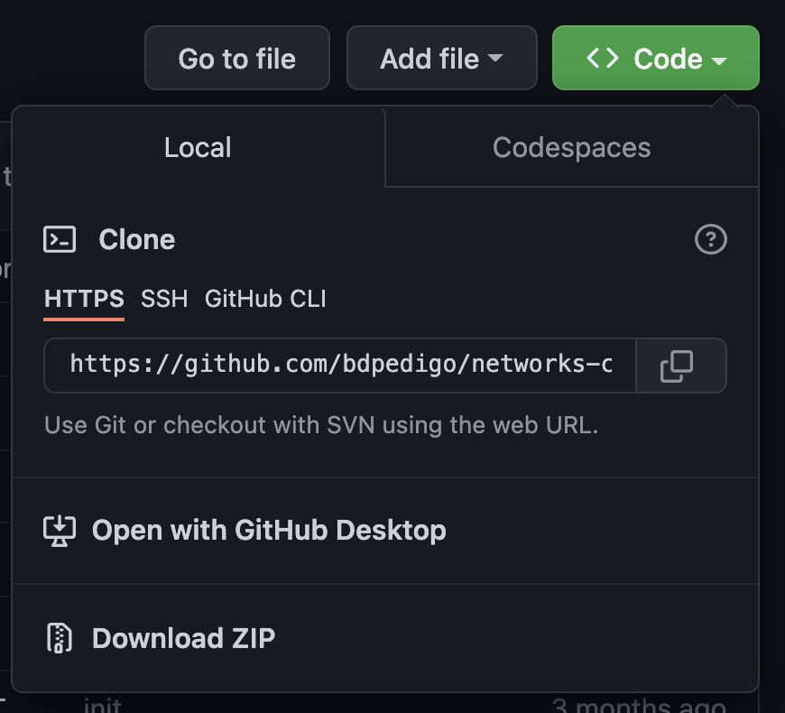
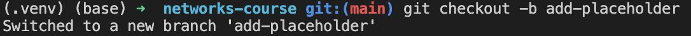
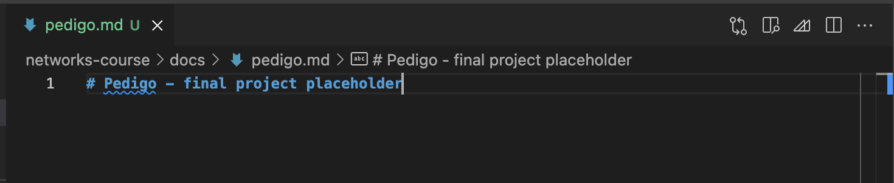
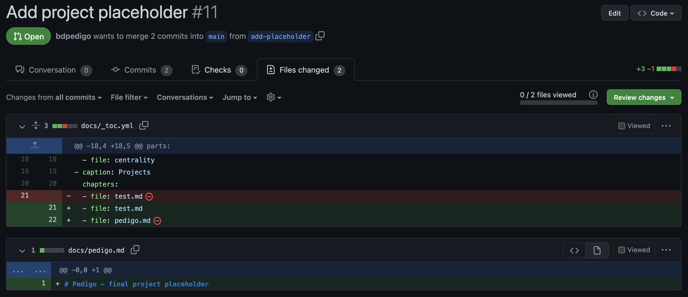

Mini-assignment
Mini-assignment¶
Note
This assignment is based on the wonderful first-contributions page: https://github.com/firstcontributions/first-contributions/blob/master/README.md
If you have trobule with my instructions below, I suggest completing the very quick first-contributions tutorial, and see if that helps you understand the process of making a pull request.
Make sure you have
gitinstalled: https://git-scm.com/book/en/v2/Getting-Started-Installing-GitMake sure you have a GitHub (free/student) account: https://docs.github.com/en/get-started/signing-up-for-github/signing-up-for-a-new-github-account
From the command line on your machine, navigate to a folder where you would like to keep your work for the course
Go to the page for this repo: https://github.com/bdpedigo/networks-course
Find the
Forkbutton (top right) and use it to fork this repo to your own account. This essentially makes a copy of this repo which you can modify as you please.
Find the green
Codebutton on your fork (not the main page as shown here). Note that for all of the subsequent steps, the repo should be<your username>/networks-courseinstead of mine.Hit the green
Codebutton and copy theHTTPSlink: From the command line, do
git clone <link that you just copied>You should now see a directory called
networks-courseCreate and switch to a new branch by doing
git checkout -b add-placeholderMake a new file in the directory
networks-course/docs, call it<your-last-name>.md:
In that file, write
# <your last name> - final project placeholder: From the command line, make sure you are in the
networks-coursedirectory. You probably need to move there with a command likecd networks-course.Use
gitto check for modified files viagit status:
Do
git add docs/<your last name>.mdto add this new file to be tracked. You can usegit statusagain to verify if this worked
Do
git commit -m "add project placeholder". A commit is like a bundle of code modifications, and the-mallows you to write a message (like a title) to be associated with that commit.
Do
git pushto send these changes to be reflected online. Note that you main need to dogit push --set-upstream origin add-placeholderin order for this to work (like I did below).
Go to your repo on GitHub again. You will likely see a prompt to make a pull request. If not, navigate to the pull request tab and hit
New pull request.You should see a page with options for a
baseand acompare.baseshould bebdpedigo/main, andcompareshould be<your username>/add-placeholder.Add a brief title and description to the pull request. Mine looks like this:

Now, we need to make one more change prior to being done with this pull request. Find the file
networks-course/docs/_toc.yml, and add your new file to this table of contents page. Under theprojectschapter, add a new file with just your name (line 22). This just tellsjupyter-book, the package that builds the website, to look for your new page. Note that the indentation here is important.

Repeat the steps above to add a file (
git add), commit the changes (git commit), and push to the remote repository (git push). Note that your changes will be reflected in the pull request without having to do anything else.On the pull request page online, you can hit
Files changedto preview the changes you have proposed. It should look something like the screenshot below. Note that you should only be changing these two files (adding a new.mdfile, and modifying_toc.yml). If you have opened a pull request with only these two files changed, and the modifications followed all of the steps above, you are done!